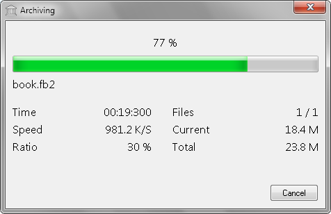

Progress information window consist of
14 labels, progress bar and button.
| Item | Description |
| Progress % | Current progress state. |
| File name | Current appending file. |
| Time | Elapsed time from start operation. |
| Speed | Count processing bytes per second. |
| Ratio | Compression ratio. |
| Processed files | Current and total count. |
| Processed size | In bytes from start operation. |
| Total size | To complete processing. |